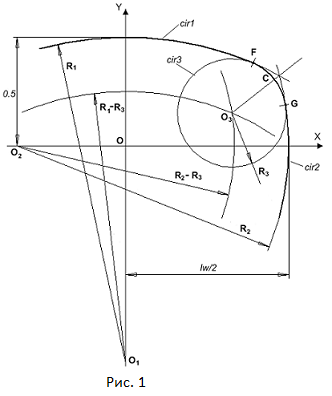
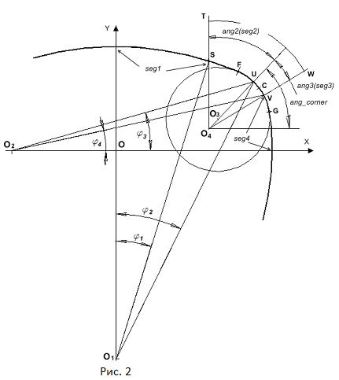
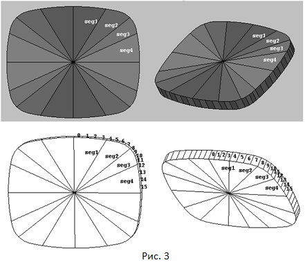

Направляющей линией для цилиндра рундиста является комбинация из восьми дуг окружностей. Программа в работе показана ниже.
Рундист огранки состоит из дуг восьми окружностей – четыре главные дуги окружности сопряжены по углам огранки четырьмя вспомогательными дугами. Используя ту особенность формы рундиста огранки, что она обладает симметрией по двум осям, достаточно рассмотреть построение одной четверти всей кривой представляющей собой рундист огранки. Рисунок 1 иллюстрирует это построение. Фактически оно сводится к сопряжению окружностей cir1 и cir2 дугой третьей окружности cir3. Окружность cir3 имеет внутреннее касание к окружностям cir1 и cir2 в точках F и G. Термин внутреннее касание означает, что центры дуг окружностей cir1, cir2 и cir3 находятся по одну сторону от точек их касания.
Будем считать, что заданы радиусы R1 и R2 основных окружностей cir1 и cir2, а также радиус сопрягающей окружности R3. Предположим также, что известно расположение центров O1 и O2 основных окружностей. Требуется найти положение центра O3 сопрягающей окружности и координаты точек касания F и G. Построение будем вести в нормированных величинах. Это значит, что ширина рундиста принимается равной величине 1, а длина – величине, равной отношению длины огранки к ширине огранки. Также как и при построении других огранок обозначим величину этого отношения как lw.
Для нахождения центра O3 окружности сопряжения cir3 построим две вспомогательные окружности с радиусами равными значениям R1 – R3 и R2 – R3. Центры этих вспомогательных окружностей поместим в центры основных окружностей O1 и O2 соответственно. Тогда центр O3 окружности cir3 можно найти как точку пересечения вспомогательных окружностей. Для нахождения точек пересечения окружности cir3 с окружностями cir1 и cir2 создается окружность с центром O3 и радиусом, отличающимся в большую сторону от R3 на очень малую величину epsilon – радиус этой окружности равен R3 + epsilon. Введение этой малой величины необходимо для того, чтобы в процессе проведения вычислений заведомо обеспечить пересечение соответствующих окружностей. В предельном случае, когда значение epsilon стремится к 0, две точки пересечения сливаются и превращаются в одну точку касания окружностей. Пересечение окружности с радиусом равным (R3 + epsilon) с окружностями cir1 и cir2 даст точки касания F и G. Теперь, когда мы знаем, как найти точки сопряжения дуг окружностей, из которых состоит огранка "подушка", можно перейти созданию программы для расчета формы рундиста огранки.
Из рисунка рис.1 следует, что в программе построения огранки необходимо для построения линии рундиста иметь
три параметра – радиусы трех окружностей (или, более точно, частей окружностей - дуг) - cir1, сir2 и cir3.
Как известно, размер любой окружности можно определить двумя способами – или задавая ее радиус, или задавая кривизну окружности.
Под кривизной окружности понимается величина
K = 1 / R,
где R является радиусом рассматриваемой окружности. При использовании кривизны для задания размера окружности,
ее значение при больших радиусах окружности приближается к нулевому значению. Так как в огранке "подушка"
величина радиусов R1 и R2 может принимать достаточно большие значения,
то размеры окружностей cir1 и cir2 имеет смысл задавать путем указания величины их кривизны,
чтобы не иметь дело с большими числами, относящимися к значениям радиусов. Однако на практике можно использовать
еще один способ задания размеров окружностей.
Предположим, что размеры окружностей cir1 и cir2 рассчитываются по следующим формулам:
R1 = (roundness_cir1)/2 + (lw ∙ lw)/(8 ∙ roundness_cir1)
R2 = (roundness_cir2)/2 + 1/(8 ∙ roundness_cir2)
В этих выражениях значения величин roundness_cir1 и roundness_cir2 задают размеры окружностей.
Они, можно сказать, совмещают в себе одновременно и радиус и кривизну соответствующих окружностей.
Для того чтобы почувствовать, как работают roundness_cir1 и roundness_cir2, следует положить значение lw равным 1,
а значения roundness_cir1 и roundness_cir2 сделать равными 0.5.
Тогда значения радиусов R1 и R2 станут равными также 0.5.
Принимая во внимание тот факт, что форму огранки мы рассчитываем в нормированных величинах,
при которых ширина огранки по оси OY равна 1, то при значениях roundness_cir1 и roundness_cir2 равных 0.5
форма огранки типа "подушка" превращается в окружность. Следовательно, для определения формы огранки типа "подушка"
нам удобно задавать значения параметров roundness_cir1 и roundness_cir2 в пределах от 0 до 0.5.
Из приведенных выше рассуждений видно, что эти параметры действительно совмещают в себе определение размера окружности,
как с точки зрения кривизны, так и с точки зрения радиуса окружности.
Поэтому дадим этим параметрам специальное название – округленность (roundness).
Следующей, после построения формы рундиста, является задача разбиения рундиста на составляющие его грани. Обычно рундист делят на 64 отдельные грани (или сегмента). Можно разбить рундист и на большее количество сегментов, но пока мы ограничимся значением равным 64 граням. Существует несколько способов позволяющих произвести такое разбиение. Простейшим из этих способов заключается в следующем. Предположим, что центр рундиста совпадает с началом системы координат O. Из точки O проведем лучи с шагом 360°/64 и найдем точки пересечения этих лучей с рундистом огранки. Эти точки будут определять границы сегментов рундиста. Такой способ, хотя и является достаточно простым по реализации, тем не менее, не является наилучшим с точки зрения красоты огранки, которая получается в результате такого разбиения рундиста – чем больше форма рундиста отличается от окружности, тем менее эстетичным получается результат разбиения рундиста. Поэтому на практике такой способ деления рундиста на сегменты использовать не рекомендуется.
В самом общем случае все методы, которые реально используются, можно разделить по признаку того насколько разбиение рундиста на сегменты привязано (или не привязано) к построению короны или павильона огранки. Перечислим несколько возможных способов деления рундиста огранки "подушка" на сегменты. Каждый из этих способов деления рундиста можно выполнить с некоторыми вариациями, но суть их от этого не изменится.
Рундист можно так рабить на сегменты, что расстановка точек на линии рундиста будет зависеть ни от положения вершин короны,
ни от положения вершин павильона. В этом случае деление рундиста на сегменты происходит независимо от построения остальных частей огранки.
Но при этом разбиение производится с учетом того, что рундист состоит из восьми дуг окружностей
и размер его сегментов определяется с учетом того, какой дуге окружности принадлежит рассматриваемый сегмент.
Можно таким образом разбить рундист на сегменты, чтобы расстановка узловых вершин на рундисте происходила одновременно
с определением положения вершин короны, но не зависела при этом от положения вершин павильона.
Такой метод разбиения рундиста позволяет в некоторых огранках получить более красивую форму короны при удлинениях огранки
существенно отличающихся от значения равного 1. В дальнейшем этот способ будет подробно разобран.
Существует еще метод разбиения рундиста на сегменты, когда положение вершин рундиста не зависит от положения вершин короны,
но зависит от координат некоторых вершин павильона. Этот способ разбиения иногда применяют при наличии
на павильоне достаточно протяженных вдоль рундиста граней.
Иногда при построении некоторых огранок (и это относится не только к огранкам типа "подушка") требуется сделать так,
чтобы узловые вершины рундиста со стороны короны не совпадали по своему положению в горизонтальной плоскости
с узловыми вершинами рундиста расположенными со стороны павильона.
В этом случае расстановка вершин на рундисте производится отдельно для его вершин находящихся на стороне короны
и для его вершин со сторны павильона. В результате такого разбиения рундиста на нем появляются дополнительные сегменты.
В дальнейшем мы рассмотрим построение огранки "подушка" Octagram с таким рундистом.
При использовании рассмотренного ниже способа расстановки вершин на рундисте огранки "подушка" координаты вершин определяются вне зависимости от того какую форму имеют корона и павильон. Этот метод используется наиболее часто. Деление рундиста на сегменты в огранках, построение которых было осуществлено в предыдущих разделах – бриллиант, маркиз, груша и сердце, также производилось безотносительно к тому, какую форму у этих огранок имели корона и павильон. В некотором отношении такой способ разбиения рундиста является наиболее предпочтительным. Связано это с тем, что при таком способе его построения, координаты вершин короны и павильона огранки зависят только положения вершин рундиста, но не зависят напрямую от положения вершин друг друга и, поэтому, в программах, оптимизирующих размер и форму огранок, появляется возможность оптимизировать корону и павильон независимо друг от друга. Геометрические построения, соответствующие такому способу разбиения рундиста показаны на рисунке 2. Этот рисунок во многом повторяет рисунок 1, но в нем отражены еще дополнительные моменты, которые относятся именно к разбиению рундиста на сегменты. 
Разбиение производится следующим образом. Сначала определяются размеры и положение на рундисте его главных сегментов. Для первой четверти огранки рундиста обозначим их как seg1, seg2, seg3 и seg4. Через точку O3, являющуюся центром окружности сопряжения, проводим прямую параллельную оси OX. Относительно этой прямой определим значение угла ang_corner, которое задаст положение точки U. Эта точка соответствует угловой вершине 8 рундиста, которая делит первую четверть рундиста огранки на две части. Одна часть включает в себя сегменты seg1, seg2, а другая – seg3 и seg4. Назовем эту вершину угловой вершиной рундиста.
Через точку O3 и точку U проведем прямую, относительно которой будем отсчитывать значение углов ang2 и ang3. Эти углы определят размер сегментов seg2 и seg3 и опосредованно – размер сегментов seg1 и seg4. Границам этих сегментов соответствуют точки S и V. Точке S соответствует вершина 4 рундиста, а точке V – вершина 12 рундиста. Координаты точек S и V рассчитываются как точки пересечения лучей исходящих из точки O4 и проходящих через вспомогательные, предварительно определенные точки T и W, с линией рундиста. Направление лучей, проходящих через точки T и W, задается углами ang2 и ang3.
Особым образом задаются координаты точки O4. Можно было бы совместить положение этой точки с положением
центра сопрягающей окружности O3. Но в этом случае размер сегментов оказался бы связанным с радиусом сопрягающей окружности R3.
Поэтому зададим положение точки O4 таким образом, чтобы координаты этой точки оказались привязаны к длине и ширине огранки
через значение введенного нами параметра, который в СДО имеет поле gd_segments.
Мы примем, что ордината точки O4 равна значению gd_segments ,
а абсцисса этой точки равна gd_segments ∙ lw .
Таким образом, чем меньше мы делаем значение gd_segments, тем дальше мы удаляем точку O4 от угловой части рундиста и,
тем самым, мы увеличиваем размер угловых его сегментов seg2 и seg3 и одновременно уменьшаем при этом размер сегментов seg1 и seg4.
В online программе данной главы точка O4 не присутствует. Программа, в которой точка O4 используется
для определения границ сегментов, приведена в следующей главе. Сравнив эти две программы можно увидеть в чем заключается
преимущество варианта программы с введенной точкой O4.
После того как размеры сегментов seg1, seg2, seg3, seg4 и их положение на рундисте определены, следующей задачей является деление каждого из четырех названных сегментов еще раз на четыре части. Осуществим такое деление путем определения точек пересечения лучей проведенных из центров окружностей O1 и O2 с линией рундиста огранки.
Из рассмотрения рисунка 3 видно, что, прежде всего, требуется найти величину углов φ1, φ2, φ3 и φ4. Эти углы задают границы секторов, в пределах которых будут проходить лучи осуществляющие деление сегментов seg1, seg2, seg3 и seg4. Так как координаты точек S, U и V уже определены, то зная координаты центров окружностей O1 и O2, нахождение значений углов φ1, φ2, φ3 и φ4 не составляет труда. Как производится деление каждого сегмента на четыре части, можно увидеть из приведенного ниже листинга, В этой функции осуществляется построение рундиста огранки "подушка" описанным выше способом и его деление на 64 сегмента. В функцию передается массив из 64 элементов, предназначенный для хранения двумерных координат вершин рундиста.
В процессе своей работы функция заполняет эти элементы рассчитанными значениями координат вершин рундиста. Для того, чтобы продемонстрировать приведенный выше способ построения рундиста огранки "подушка" можно создать простейшую 3D-модель, которая будет состоять только из сегментов рундиста, и двух дополнительных вершин расположенных сверху и снизу огранки по ее центру. Трехмерная модель огранки рундиста приведена на рисунке 3.

function init_girdle()
{
var i;
// вспомогательные точки
var point1 = new Point2D();
var point2 = new Point2D();
// Радиус большей окружности
R1 = rounnd_cir1/2.0 + (lw * lw)/(8.0*rounnd_cir1);
// Центр большей окружности - лежит на оси OY
O1 = new Point2D(0, 0.5 - R1);
// Большая окружность
var cir1 = new Circle2D(O1, R1);
// Радиус меньшей окружности
R2 = rounnd_cir2/2.0 + 1/(8.0*rounnd_cir2);
// Центр меньшей окружности - лежит на оси OX
O2 = new Point2D(lw/2 - R2, 0);
// Меньшая окружность
var cir2 = new Circle2D(O2, R2);
// Окружности, используемые для вычисления центра
// сопрягающей окружности
R2_R3 = new Circle2D(O2, R2 - R3);
R1_R3 = new Circle2D(O1, R1 - R3);
// Центр сопрягающей окружности
O3 = new Point2D();
if(!R2_R3.IntersectionTwoCircles(R1_R3, point1, point2))
{
return null;
}
if (point1[0] > point2[0])
{
O3[0] = point1[0]; O3[1] = point1[1]
}
else
{
O3[0] = point2[0]; O3[1] = point2[1]
}
// Создаем сопрягающую окружность чуть большего
// радиуса чем R3 (для проверки)
var cir3 = new Circle2D(O3, R3 + 0.00001); // R3 + EPSILON);
// Проверяем пересекаются или нет окружности
// cir2 и cir1 с сопрягающей окружностью cir3
// Координаты точек пересечения g и point2
// и также f и point2 должны отличаться совершенно незначительно
G = new Point2D(); // Точки пересечения окружностей cir1
F = new Point2D(); // и cir2 с сопрягающей окружностью cir3
if(!cir2.IntersectionTwoCircles(cir3, G, point2))
{
return null;
}
if(!cir1.IntersectionTwoCircles(cir3, F, point2))
{
return null;
}
// Находим положение точки на луче,
//который будет определять направление на котором
//лежит угловая вершина рундиста girdle[8].
// Этот луч будет использоваться в качестве
//начальной прямой отсчета для углов ang_2 и ang_3.
var u = new Point2D();
u[0] = O3[0] + Math.cos(ang_corner) * R3;
u[1] = O3[1] + Math.sin(ang_corner) * R3;
var t = new Point2D(); // Точки на радиусах сопрягающей окружности cir3
var w = new Point2D(); // На рисунке они лежат на сопрягающей окружности
t[0] = O3[0] + Math.cos(ang_corner + ang_2);
t[1] = O3[1] + Math.sin(ang_corner + ang_2);
w[0] = O3[0] + Math.cos(ang_corner - ang_3);
w[1] = O3[1] + Math.sin(ang_corner - ang_3);
// Прямые используемые для нахождения границ сегментов рундиста.
var ln_O3_t = new Line2D(O3, t);
var ln_O3_u = new Line2D(O3, u);
var ln_O3_w = new Line2D(O3, w);
// Конструируем верхнюю часть рундиста
var s = new Point2D(); // s, v - Точки лежащие на границе сегментов seg1 и seg2
var v = new Point2D(); // и также на границе сегментов seg3 и seg4
girdle[0] = new Point2D(0, 0.5);
if(!cir1.IntersectionLineCircle(ln_O3_t, point1, point2))
{
return null;
}
if (point1[1] > point2[1])
{
s[0] = point1[0]; s[1] = point1[1]
}
else
{
s[0] = point2[0]; s[1] = point2[1]
}
girdle[4] = s;
girdle[8] = u;
if(!cir2.IntersectionLineCircle(ln_O3_w, point1, point2))
{
return null;
}
if (point1[0] > point2[0])
{
v[0] = point1[0]; v[1] = point1[1]
}
else
{
v[0] = point2[0]; v[1] = point2[1]
}
girdle[12] = v;
girdle[16]= new Point2D(lw/2, 0);
// Координаты остальных вершин рундиста
var x, y;
var Fi2 = Math.atan2((u[0] - O1[0]), (u[1] - O1[1]));
var Fi1 = Math.atan2((s[0] - O1[0]), (s[1] - O1[1]));
var ang = Fi2;
var dAng = (Fi2 - Fi1)/4; // Угловой шаг
// seg2
for(i = 7; i > 4; i--)
{
ang = ang - dAng;
x = Math.sin(ang)*R1 + O1[0];
if(x > F[0]) // Правее точки пересечения окружностей cir1 и cir3
{
// Пересечение с сопрягающей окружностью cir3
var line2 = new Line2D();
var vector2 = new Vector2D(Math.sin(ang), Math.cos(ang));
line2.CreateLineVectorPoint(vector2, O1);
if(!cir3.IntersectionLineCircle(line2, point1, point2))
return null;
if (point1[1] > point2[1])
{
y = point1[1];
x = point1[0];
}
else
{
y = point2[1];
x = point2[0];
}
}
else
{
y = Math.cos(ang)*R1 + O1[1];
}
girdle[i] = new Point2D(x, y);
}
ang = Fi1;
dAng = Fi1 / 4;
// seg1
for(i = 3; i > 0; i--)
{
ang = ang - dAng;
x = Math.sin(ang)*R1 + O1[0];
if(x > F[0]) // Правее точки пересечения окружностей cir1 и cir3
{
// Пересечение с сопрягающей окружностью cir3
var line1 = new Line2D();
var vector1 = new Vector2D(Math.sin(ang), Math.cos(ang));
line1.CreateLineVectorPoint(vector1, O1);
if(!cir3.IntersectionLineCircle(line1, point1, point2))
{
return null;
}
if (point1[1] > point2[1])
{
y = point1[1];
x = point1[0];
}
else
{
y = point2[1];
x = point2[0];
}
}
else
{
y = Math.cos(ang)*R1 + O1[1];
}
girdle[i] = new Point2D(x, y);
}
var Fi3 = Math.atan2((u[1] - O2[1]), (u[0] - O2[0]));
var Fi4 = Math.atan2((v[1] - O2[1]) ,(v[0] - O2[0]));
ang = Fi3;
dAng = (Fi3 - Fi4)/4;
// seg3
for(i = 9; i < 12; i++)
{
ang = ang - dAng;
y = Math.sin(ang)*R2 + O2[1];
if(y > G[1]) // Выше точки пересечения окружностей cir2 и cir3
{
// Пересечение с сопрягающей окружностью cir3
var line3 = new Line2D();
var vector3 = new Vector2D(Math.cos(ang), Math.sin(ang));
line3.CreateLineVectorPoint(vector3, O2);
if(!cir3.IntersectionLineCircle(line3, point1, point2))
{
return null;
}
if (point1[0] > point2[0])
{
x = point1[0];
y = point1[1];
}
else
{
x = point2[0];
y = point2[1];
}
}
else
{
x = Math.cos(ang)*R2 + O2[0];
}
girdle[i] = new Point2D(x, y);
}
ang = Fi4;
dAng = Fi4 / 4;
// seg4
for(i = 13; i < 16; i++)
{
ang = ang - dAng;
y = Math.sin(ang)*R2 + O2[1];
if (y > G[1]) // Выше точки пересечения окружностей cir2 и cir3
{
// Пересечение с сопрягающей окружностью cir3
var line4 = new Line2D();
var vector4 = new Vector2D(Math.cos(ang), Math.sin(ang));
line4.CreateLineVectorPoint(vector4, O2);
if(!cir3.IntersectionLineCircle(line4, point1, point2))
{
return null;
}
if (point1[0] > point2[0])
{
x = point1[0];
y = point1[1];
}
else
{
x = point2[0];
y = point2[1];
}
}
else
{
x = Math.cos(ang)*R2 + O2[0];
}
girdle[i] = new Point2D(x, y);
}
// Производим вычисления вершин рундиста для остальных квадрантов
for(i = 0; i < 16; i++)
{
girdle[32-i] = new Point2D();
girdle[32-i][0] = girdle[i][0];
girdle[32-i][1] = -girdle[i][1];
}
for(i = 1; i < 32; i++)
{
girdle[64-i] = new Point2D();
girdle[64-i][0] = -girdle[i][0];
girdle[64-i][1] = girdle[i][1];
}
}